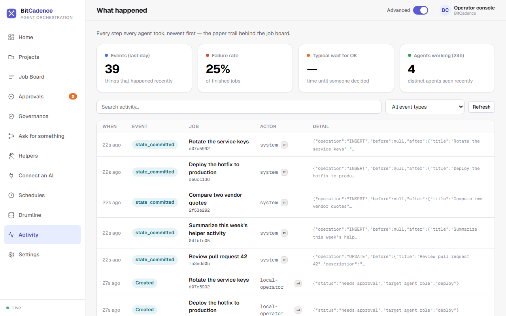
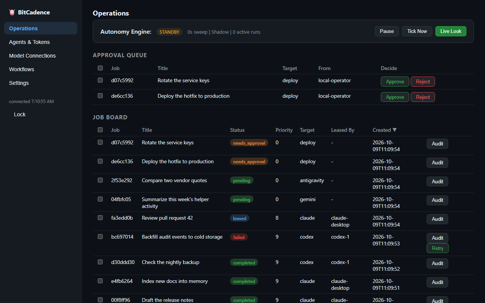

Home (Overview)
Goal
See what needs you and what is running from one screen, without reading a job list. Home replaced the old Overview and its metric cards.
Step-by-Step Instructions
1. Open Home
Click Home at the top of the left menu. It is the first page the console opens.

2. Read "What needs you"
This comes first. Each card is one thing waiting on a person, with a count beside the heading:
- Needs you: a job paused for your approval. Click Approve to say yes, or Look first to read the details.
- Stuck: work that failed or has gone quiet. Click Look first.
3. Read "What's running"
Below that, each card is one piece of work in flight, with a state word (Working, Waiting) and a plain sentence such as Waiting for a free helper or claude is working on this step. Steps of the same plan are grouped, and a Score run shows as one card. Click a card for more. See all work opens the job board.
Home refreshes by itself and shows recent work only. See Console Home for the exact rules, including when a job is called Stuck.
4. Look at the rest of the menu
The left menu also has Projects, the Job Board, Approvals, Governance, Ask for something, Helpers, Connect an AI, Schedules, Drumline, Activity and Settings. Activity shows every step every helper took, newest first, with event, failure and helper counts.

5. The minimal dashboard
/dashboard is a smaller, plainer page for a quick look. It asks for a token first, and still uses the technical labels (Operations, Agents & Tokens).

6. Advanced mode
The Advanced switch in the top bar shows the technical layer (raw IDs, payloads, retry budgets). Leave it off for plain wording.
The CLI Equivalent
To obtain a quick operational snapshot from your terminal:
# Health check and diagnostic summary
mco status
# List all helpers and their online presence
mco agents
What You'll See
- Live updates: Cards move between What needs you and What's running as helpers pick up and finish jobs.
- Failure alerts: A job that fails with no retries left appears under What needs you as Stuck.
- Demo mode: Before you connect, the bottom of the left menu says Demo · simulated data and the cards are examples.
If It Goes Wrong
1. "Home looks out of date"
- Cause: The connection to the gateway was interrupted.
- Fix: Check the status at the bottom of the left menu: it should say Live. If it does not, refresh the browser page (
F5).
2. "No helpers are working"
- Cause: No background helpers or daemon listeners are running.
- Fix: Start helpers in the Desktop Manager, or launch a listener from a terminal:
mco listen --role codex --instance worker-1